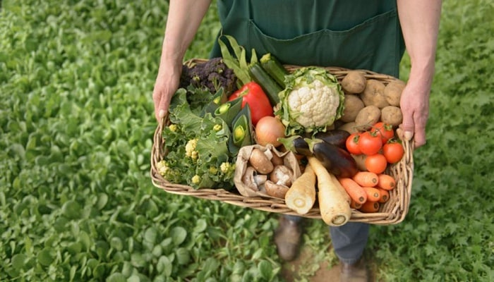

La agricultura proporciona a las personas frutas, verduras; carne y productos lácteos que están llenos de importantes nutrientes requeridos por el cuerpo, así como antioxidantes que aumentan la resistencia de los cuerpos tienen hacia algunas enfermedades que serían causadas por la falta de estos nutrientes.
Así pues, la agricultura beneficia al núcleo familiar al proveerle de alimentos, de empleo y recursos económicos cuando se dedican a esta actividad, de seguridad alimentaria, así como de cultura y tradición gastronómica.
